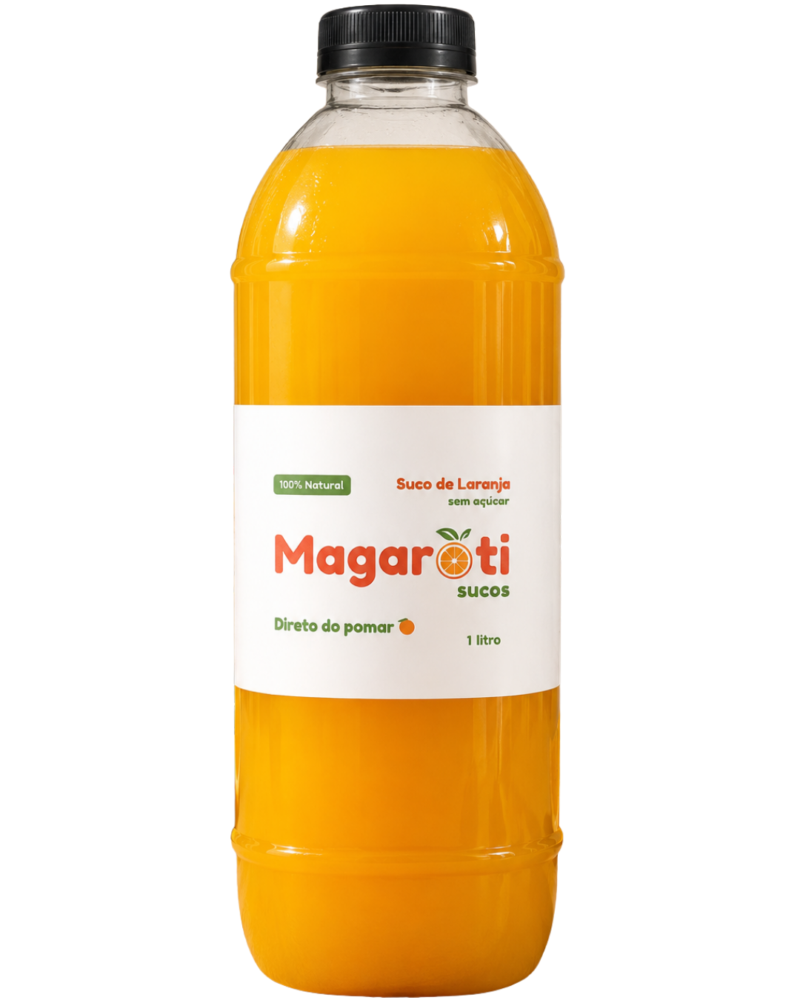

O suco mais fresco
que você já provou.
Laranjas colhidas do nosso próprio pomar, espremidas no mesmo dia da entrega. Sem conservantes, sem açúcar adicionado. Só laranja.

experiência
Uma empresa que nasceu do amor pela laranja.
A Magaroti Sucos surgiu de uma paixão genuína pela qualidade. Temos nosso próprio pomar, o que nos dá um controle total — da terra ao copo — que nenhum concorrente consegue oferecer.
Enquanto outros dependem de fornecedores externos, a gente colhe nossas laranjas direto do pé, espreme no mesmo dia ou no dia anterior à entrega e mantém tudo refrigerado para preservar o sabor e os nutrientes.
O resultado é um suco que você sente a diferença no primeiro gole.
Da laranja ao copo, com cuidado em cada etapa.
Transparência total sobre como o seu suco chega até você.
Cultivo no pomar próprio
Nossas laranjas crescem no nosso próprio pomar, sem pressa, sem intermediários. Controlamos cada etapa do cultivo para garantir a melhor fruta.
Colheita no ponto certo
As laranjas são colhidas apenas quando estão no ponto ideal de maturação — mais doces, mais suculentas e com o máximo de vitamina C.
Preparo e extração
O suco é extraído no mesmo dia ou no dia anterior à entrega. Sem conservantes, sem aditivos. Apenas o puro suco da fruta.
Armazenamento refrigerado
Após a extração, o suco vai direto para refrigeração. Temperatura controlada para manter o sabor, os nutrientes e a qualidade até o momento do consumo.
Entrega rápida
Enviamos com agilidade para garantir que você receba o suco ainda fresquinho, com todo o sabor e qualidade intactos.
O que nos torna diferentes de todos os outros.
Pomar próprio
Controlamos toda a cadeia produtiva. Não dependemos de fornecedores — a laranja é nossa, do início ao fim.
Zero conservantes
Nenhum aditivo, nenhum conservante, nenhum corante. Só o suco puro da fruta, como deve ser.
Feito na hora
O suco é extraído no mesmo dia ou no máximo no dia anterior à entrega. Frescor que você sente no sabor.
Cadeia de frio
Armazenamento refrigerado do início ao fim. Temperatura controlada para preservar qualidade e nutrientes.
Colheita seletiva
Só as laranjas no ponto certo de maturação são selecionadas. Mais doce, mais suco, mais vitamina C.
Empresa regularizada
CNPJ ativo e empresa devidamente registrada. Você compra com segurança e nota fiscal.
Embalagem que preserva, sabor que surpreende.
Quem experimenta, recomenda.
O suco é maravilhoso. Natural, saudável e de qualidade. Eu amei e já quero provar de novo!
— Tânia PradoO suco servido no evento estava delicioso, dava pra sentir que a laranja era bem doce e de alta qualidade. Fez muito sucesso entre os convidados. Estou ansiosa para provar novamente.
— Ana Clara Dourado"Todo mundo elogiou, acabou rápido. Com certeza vou pedir de novo."
— Organização do eventoPronto para sentir a diferença?
Preencha o formulário ao lado e entraremos em contato para confirmar seu pedido e combinar a entrega.
- ✅ Sem taxa de cadastro
- ✅ Entrega rápida
- ✅ Suco fresco garantido
- ✅ Atendimento personalizado
Dúvidas? Fale diretamente conosco:
💬 Pedir pelo WhatsAppPedido recebido!
Obrigado! Respondemos no mesmo dia via WhatsApp para confirmar seu pedido!